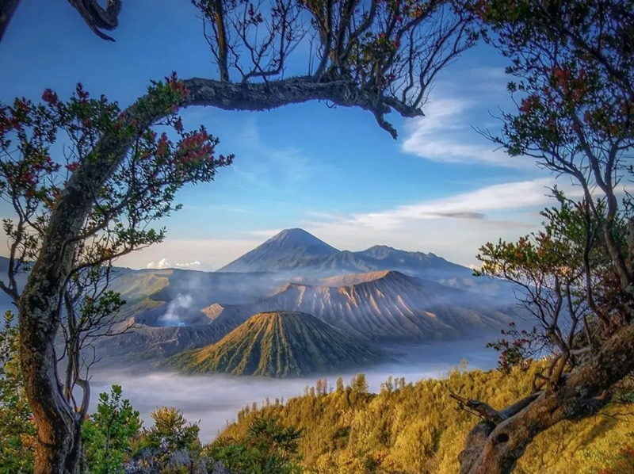
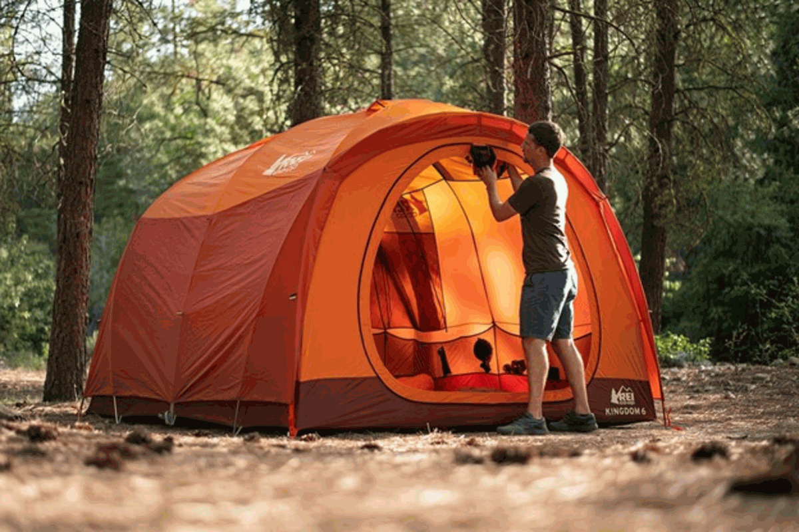
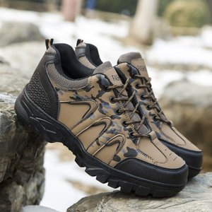
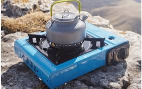
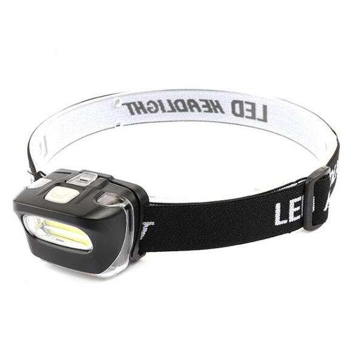
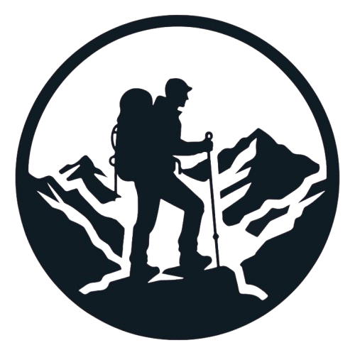
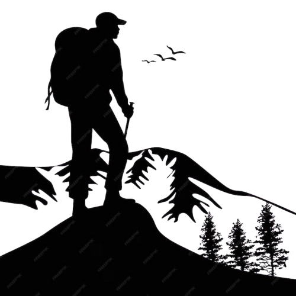
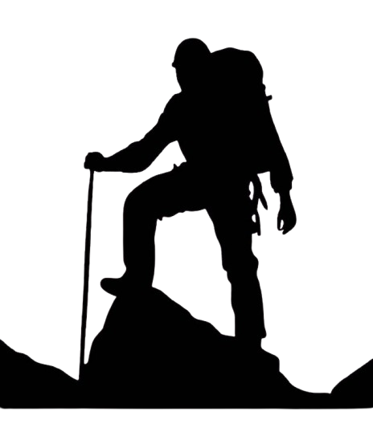
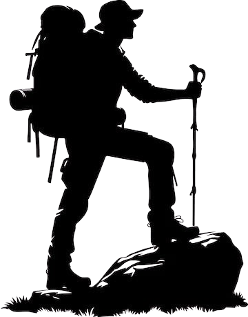

Panduan Pendakian Gunung Indonesia
Mari jelajahi keindahan alam Indonesia dengan persiapan yang tepat dan informasi lengkap.
Daftar Gunung Terpopuler
Temukan gunung-gunung terindah untuk petualangan Anda.
Tips Mendaki Aman
Persiapkan diri dengan tips dari pendaki berpengalaman.
Peralatan Wajib Bawa
Lengkapi perlengkapan untuk pendakian yang nyaman dan aman.
Selamat Datang di Pendaki.ID
Website ini dibuat sebagai panduan lengkap bagi para calon pendaki.


Daftar Gunung Populer
Gunung Semeru
Gunung Semeru adalah gunung tertinggi di Pulau Jawa...
Gunung Rinjani
Gunung Rinjani adalah gunung berapi kedua tertinggi di Indonesia...

Gunung Bromo
Gunung Bromo adalah gunung berapi aktif di Jawa Timur...
Baca Selengkapnya Tentang Gunung Di Indonesia
10+ Gunung Terindah di Indonesia, Surga Bagi Para PendakiTips Mendaki Gunung
- Persiapkan fisik dengan latihan rutin sebelum pendakian.
- Bawa peralatan yang sesuai dan jangan terlalu berat.
- Perhatikan cuaca dan jangan memaksakan diri saat kondisi buruk.
- Jaga kebersihan lingkungan selama pendakian.
- Selalu ikuti arahan pemandu atau petugas setempat.
Peralatan Wajib Bawa

Tenda
Tempat berlindung selama pendakian dan beristirahat.

Sepatu Gunung
Sepatu yang nyaman dan kuat untuk mendukung aktivitas pendakian.

Kompor Portable
Untuk memasak makanan dan merebus air selama di gunung.

Senter
Penerangan saat malam hari atau di area gelap.
Artikel Pendakian
Tips Packing Peralatan Gunung
Cara mengepak perlengkapan agar ringan dan praktis dibawa.
Kenali Cuaca Gunung dan Cara Menghadapinya
Informasi penting tentang kondisi cuaca di pegunungan dan bagaimana pendaki bisa bertindak.
Video 26 Perlengkapan dan Tips Penting Sebelum Mendaki Gunung
Kontak Kami

 +62 812-8261-2603
+62 812-8261-2603
Fariz Afdilah Muhamad

+62 882-1075-5283
Muhammad Reza

+62 896-5115-3790
Muhamad Febryansyah

+62 857-1087-1994
Dafa Alfiansyah